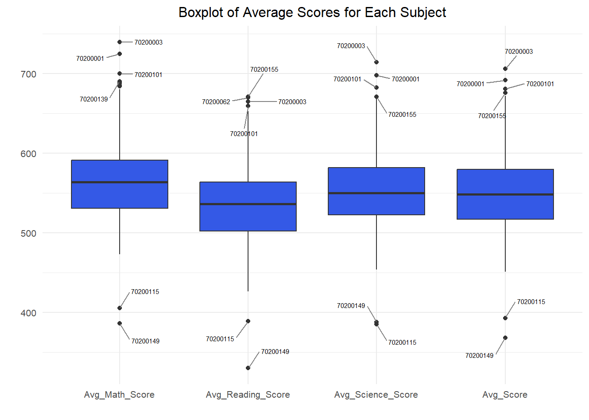

pacman::p_load(tidyverse,haven,dplyr,plotly,ggrepel, patchwork, ggthemes, hrbrthemes)Take-home Exercise 2: Enhancing Visualization: Critique, Redesign, and Remake
1. Project Overview
In this take-home exercise, the task involves selecting one of the Take-home Exercise 1 submissions from a classmate and conducting a critique based on clarity and aesthetics. I select the take-home exercise 1 from Jingheng.
Additionally, a sketch for an alternative design will be created using data visualization design principles learned in Lesson 1 and 2.
Finally, the original design will be remade using ggplot2, ggplot2 extensions, and tidyverse packages.
The dataset utilized for this exercise is sourced from the Student Questionnaire data file from the PISA 2022 database, processed through the RStudio tidyverse family of packages, and visualized using ggplot2 and its extensions.
2. Data preparation
The original author’s data preparation steps for the critiqued graphs are provided below for quick reference. Since the main focus of this exercise is not on these steps, detailed explanations will not be covered.
stu_qqq <- haven::read_sas("data/cy08msp_stu_qqq.sas7bdat")stu_qqq_SG <- stu_qqq %>%
filter(CNT == "SGP")write_rds(stu_qqq_SG,
"data/stu_qqq_SG.rds")stu_qqq_SG <-
read_rds("data/stu_qqq_SG.rds")Create a new dataset PV by extracting relevant variables from stu_qqq_SG.
Show the code
PV <- stu_qqq_SG %>%
mutate(
Math_Score = rowMeans(select(., starts_with("PV1MATH"), starts_with("PV2MATH"), starts_with("PV3MATH"), starts_with("PV4MATH"), starts_with("PV5MATH"), starts_with("PV6MATH"), starts_with("PV7MATH"), starts_with("PV8MATH"), starts_with("PV9MATH"), starts_with("PV10MATH")), na.rm = TRUE),
Reading_Score = rowMeans(select(., starts_with("PV1READ"), starts_with("PV2READ"), starts_with("PV3READ"), starts_with("PV4READ"), starts_with("PV5READ"), starts_with("PV6READ"), starts_with("PV7READ"), starts_with("PV8READ"), starts_with("PV9READ"), starts_with("PV10READ")), na.rm = TRUE),
Science_Score = rowMeans(select(., starts_with("PV1SCIE"), starts_with("PV2SCIE"), starts_with("PV3SCIE"), starts_with("PV4SCIE"), starts_with("PV5SCIE"), starts_with("PV6SCIE"), starts_with("PV7SCIE"), starts_with("PV8SCIE"), starts_with("PV9SCIE"), starts_with("PV10SCIE")), na.rm = TRUE),
Total_Score = Math_Score + Reading_Score + Science_Score,
Gender = ifelse(ST004D01T == 1, "Female", "Male"),
Own_Room = ifelse(ST250Q01JA == 1, "Yes" , "No"),
mi_num = ST251Q06JA
) %>%
select(CNTSCHID, CNTSTUID, Math_Score, Reading_Score, Science_Score, Total_Score, Gender, Own_Room, mi_num)3. Visualization Critique and Remake
There are five graphs in total in this take-home exercise 1 and they will be reviewed and remade in terms of clarity and aesthetics.
3.1 Distribution of Student Performance
3.1.1 Critique
The histograms of math, reading, science and total scores show the distribution of student performance.
Show the code
plot1 <- ggplot(data = PV, aes(x = Math_Score)) +
geom_histogram(bins = 10, boundary = 100, color = "blue", fill = "#3459e6") +
ggtitle("Distribution of Maths scores")+
theme_minimal() +
theme(text = element_text(size = 8),
plot.title = element_text(hjust = 0.5))
plot2 <- ggplot(data = PV, aes(x = Reading_Score)) +
geom_histogram(bins = 10, boundary = 100, color = "blue", fill = "#3459e6") +
ggtitle("Distribution of Reading scores")+
theme_minimal() +
theme(text = element_text(size = 8),
plot.title = element_text(hjust = 0.5))
plot3 <- ggplot(data = PV, aes(x = Science_Score)) +
geom_histogram(bins = 10, boundary = 100, color = "blue", fill = "#3459e6") +
ggtitle("Distribution of Science scores")+
theme_minimal() +
theme(text = element_text(size = 8),
plot.title = element_text(hjust = 0.5))
plot4 <- ggplot(data = PV, aes(x = Total_Score)) +
geom_histogram(bins = 10, boundary = 100, color = "blue", fill = "#3459e6") +
ggtitle("Distribution of Total scores")+
theme_minimal() +
theme(text = element_text(size = 8),
plot.title = element_text(hjust = 0.5))
plot1 + plot2 + plot3 + plot4Clarity
Each chart has a clear and informative title indicating the type of distribution. This helps to understand the content of each chart.
The X-axis label is clearly defined, indicating the corresponding score type (Math, Reading, Science, Total).
Each histogram uses 10 bins, providing enough detail without looking too cluttered.
The histograms offer a restricted amount of information to the audience, primarily because it lacks the capability for sorting or labeling counts due to the continuous nature of the data. To enhance interpretation of the distribution, consider incorporating supplementary annotations, such as mean or median values.
Aesthetics
Colors chosen are clean and easily readable to the audience.
Applying the theme_minimal() function creates a clean and concise look for all the histograms.
3.1.2 Sketch of Proposed Design
3.1.3 Remake
Show the code
math_mean <- mean(PV$Math_Score, na.rm = TRUE)
reading_mean <- mean(PV$Reading_Score, na.rm = TRUE)
science_mean <- mean(PV$Science_Score, na.rm = TRUE)
total_mean <- mean(PV$Total_Score, na.rm = TRUE)
math_median <- median(PV$Math_Score, na.rm = TRUE)
reading_median <- median(PV$Reading_Score, na.rm = TRUE)
science_median <- median(PV$Science_Score, na.rm = TRUE)
total_median <- median(PV$Total_Score, na.rm = TRUE)
plot1 <- ggplot(data = PV, aes(x = Math_Score)) +
geom_histogram(bins = 10, boundary = 100, color = "blue", fill = "#3459e6") +
geom_vline(xintercept = math_mean, color = "red", linetype = "dashed") +
geom_vline(xintercept = math_median, color = "green", linetype = "dashed") +
annotate("text", x = math_mean, y = 10, label = paste("Mean:", round(math_mean, 2)), vjust = -6, color = "red") +
annotate("text", x = math_median, y = 15, label = paste("Median:", round(math_median, 2)), vjust = -1, color = "green") +
ggtitle("Distribution of Maths scores") +
theme_minimal() +
theme(text = element_text(size = 8),
plot.title = element_text(hjust = 0.5))
plot2 <- ggplot(data = PV, aes(x = Reading_Score)) +
geom_histogram(bins = 10, boundary = 100, color = "blue", fill = "#3459e6") +
geom_vline(xintercept = reading_mean, color = "red", linetype = "dashed") +
geom_vline(xintercept = reading_median, color = "green", linetype = "dashed") +
annotate("text", x = reading_mean, y = 10, label = paste("Mean:", round(reading_mean, 2)), vjust = -6, color = "red") +
annotate("text", x = reading_median, y = 15, label = paste("Median:", round(reading_median, 2)), vjust = -1, color = "green") +
ggtitle("Distribution of Reading scores") +
theme_minimal() +
theme(text = element_text(size = 8),
plot.title = element_text(hjust = 0.5))
plot3 <- ggplot(data = PV, aes(x = Science_Score)) +
geom_histogram(bins = 10, boundary = 100, color = "blue", fill = "#3459e6") +
geom_vline(xintercept = science_mean, color = "red", linetype = "dashed") +
geom_vline(xintercept = science_median, color = "green", linetype = "dashed") +
annotate("text", x = science_mean, y = 10, label = paste("Mean:", round(science_mean, 2)), vjust = -6, color = "red") +
annotate("text", x = science_median, y = 15, label = paste("Median:", round(science_median, 2)), vjust = -1, color = "green") +
ggtitle("Distribution of Science scores") +
theme_minimal() +
theme(text = element_text(size = 8),
plot.title = element_text(hjust = 0.5))
plot4 <- ggplot(data = PV, aes(x = Total_Score)) +
geom_histogram(bins = 10, boundary = 100, color = "blue", fill = "#3459e6") +
geom_vline(xintercept = total_mean, color = "red", linetype = "dashed") +
geom_vline(xintercept = total_median, color = "green", linetype = "dashed") +
annotate("text", x = total_mean, y = 10, label = paste("Mean:", round(total_mean, 2)), vjust = -6, color = "red") +
annotate("text", x = total_median, y = 15, label = paste("Median:", round(total_median, 2)), vjust = -1, color = "green") +
ggtitle("Distribution of Total scores") +
theme_minimal() +
theme(text = element_text(size = 8),
plot.title = element_text(hjust = 0.5))
library(gridExtra)
grid.arrange(plot1, plot2, plot3, plot4, ncol = 2)
The enhanced graph preserves the positive aspects of the original, including the caption and overall format, while making improvements in certain elements:
Clarity
Dotted lines for the median and mean were added to give the viewer more information about the center of the distribution.
The median and mean values are specified in each chart to enhance understanding of distribution characteristics.
Use different colors to distinguish between the median (green) and the mean (red) lines, making them easier to identify in the graph.
Aesthetics
- Color matching is clearer, and dashed and histogram colors coordinate with each other, enhancing the overall aesthetic.
3.2 Student Performance by Gender
3.2.1 Critique
The density plots compare academic performance distribution across genders.
Show the code
plot1 <- ggplot(data = PV, aes(x = Math_Score, fill = Gender)) +
geom_density(alpha = 0.7, position = "identity", stat = "density") +
scale_fill_manual(values = c("Female" = "#FF5733", "Male" = "#3459e6")) +
labs(title = "Math Scores by Gender") +
theme(legend.position = "none") +
scale_y_continuous(labels = scales::percent) +
theme_minimal() +
theme(text = element_text(size = 8), plot.title = element_text(hjust = 0.5))
plot2 <- ggplot(data = PV, aes(x = Reading_Score, fill = Gender)) +
geom_density(alpha = 0.7, position = "identity", stat = "Density") +
scale_fill_manual(values = c("Female" = "#FF5733", "Male" = "#3459e6")) +
labs(title = "Reading Scores by Gender") +
theme(legend.position = "none") +
scale_y_continuous(labels = scales::percent)+
theme_minimal() +
theme(text = element_text(size = 8),
plot.title = element_text(hjust = 0.5))
plot3 <- ggplot(data = PV, aes(x = Science_Score, fill = Gender)) +
geom_density(alpha = 0.7, position = "identity", stat = "Density") +
scale_fill_manual(values = c("Female" = "#FF5733", "Male" = "#3459e6")) +
labs(title = "Science Scores by Gender") +
theme(legend.position = "none") +
scale_y_continuous(labels = scales::percent)+
theme_minimal() +
theme(text = element_text(size = 8),
plot.title = element_text(hjust = 0.5))
plot4 <- ggplot(data = PV, aes(x = Total_Score, fill = Gender)) +
geom_density(alpha = 0.7, position = "identity", stat = "density") +
scale_fill_manual(values = c("Female" = "#FF5733", "Male" = "#3459e6")) +
labs(title = "Total Scores by Gender") +
scale_y_continuous(labels = scales::percent)+
theme_minimal() +
theme(text = element_text(size = 8),
plot.title = element_text(hjust = 0.5))
combined_plots <- plot1 + plot2 + plot3 + plot4 +
plot_layout(guides = "collect")
combined_plotsClarity
The chart clearly shows the distribution of results by subject and gender, making it easy for viewers to understand the main objectives of the chart.
Each chart has a clear title, indicating the corresponding subject and gender, so that the audience can quickly understand the content of the chart.
The use of dark blue and orange-red color scheme effectively distinguishes the density map of different genders and subjects, so that the audience can intuitively identify the different groups.
The Y axis uses a percentage scale to help you understand the relative proportions of density more clearly.
However, compared with the density plot, the histogram more intuitively presents the relationship between gender and student performance. The interpretation of histograms is directly based on frequency or frequency, which makes comparison and interpretation relatively simple. The audience can understand it more easily.
Aesthetics - The dark blue and orange red color matching is relatively bright, highlighting the characteristics of different genders and subjects, and the visual effect is good.
The transparency setting (alpha = 0.7) is used to make the density map overlay more layered and improve the aesthetic.
By adding legends and headings to each chart, the chart is made more readable and aesthetic.
3.2.2 Sketch of Proposed Design
3.2.3 Remake
Show the code
add_mean_annotation <- function(plot, score_column) {
mean_value <- mean(PV[[score_column]], na.rm = TRUE)
plot +
geom_vline(xintercept = mean_value, color = "red", linetype = "dashed") +
annotate("text", x = mean_value, y = 10,
label = paste("Mean:", round(mean_value, 2)),
vjust = -1, color = "red")
}
hist_plot1 <- ggplot(data = PV, aes(x = Math_Score, fill = Gender)) +
geom_histogram(alpha = 0.7, position = "identity", bins = 20, color = "white") +
scale_fill_manual(values = c("Female" = "#FF5733", "Male" = "#3459e6")) +
labs(title = "Math Scores by Gender") +
theme_minimal() +
theme(text = element_text(size = 8), plot.title = element_text(hjust = 0.5))
hist_plot1 <- add_mean_annotation(hist_plot1, "Math_Score")
hist_plot2 <- ggplot(data = PV, aes(x = Reading_Score, fill = Gender)) +
geom_histogram(alpha = 0.7, position = "identity", bins = 20, color = "white") +
scale_fill_manual(values = c("Female" = "#FF5733", "Male" = "#3459e6")) +
labs(title = "Reading Scores by Gender") +
theme_minimal() +
theme(text = element_text(size = 8), plot.title = element_text(hjust = 0.5))
hist_plot2 <- add_mean_annotation(hist_plot2, "Reading_Score")
hist_plot3 <- ggplot(data = PV, aes(x = Science_Score, fill = Gender)) +
geom_histogram(alpha = 0.7, position = "identity", bins = 20, color = "white") +
scale_fill_manual(values = c("Female" = "#FF5733", "Male" = "#3459e6")) +
labs(title = "Science Scores by Gender") +
theme_minimal() +
theme(text = element_text(size = 8), plot.title = element_text(hjust = 0.5))
hist_plot3 <- add_mean_annotation(hist_plot3, "Science_Score")
hist_plot4 <- ggplot(data = PV, aes(x = Total_Score, fill = Gender)) +
geom_histogram(alpha = 0.7, position = "identity", bins = 20, color = "white") +
scale_fill_manual(values = c("Female" = "#FF5733", "Male" = "#3459e6")) +
labs(title = "Total Scores by Gender") +
theme_minimal() +
theme(text = element_text(size = 8), plot.title = element_text(hjust = 0.5))
hist_plot4 <- add_mean_annotation(hist_plot4, "Total_Score")
combined_hist_plots <- hist_plot1 + hist_plot2 + hist_plot3 + hist_plot4 +
plot_layout(guides = "collect")
combined_hist_plotsThe enhanced graph preserves the positive aspects of the original, including the caption and overall format, while making improvements in certain elements:
Clarity
Adding dashed lines and text notes to the averages enhances the amount of information in the chart, making it easier for viewers to understand the central trend of the data.
The use of 20 bin and different colors provides clear histogram visuals for each gender, helping to observe the distribution.
Aesthetics
- Bright colors were chosen to make the histogram of the different genders clearly distinguishable in the chart. However, the red font of the mean is not obvious in this graph, but this is to correspond to the mean in Figure 3.1.3, because the color has not been changed.
3.3 Student Performance by School
3.3.1 Critique
The box plots show the distribution of school average scores in each subject.
Show the code
School_Avg_Scores <- PV %>%
group_by(CNTSCHID) %>%
summarize(
Avg_Math_Score = mean(Math_Score, na.rm = TRUE),
Avg_Reading_Score = mean(Reading_Score, na.rm = TRUE),
Avg_Science_Score = mean(Science_Score, na.rm = TRUE),
Avg_Score = mean(Total_Score/3, na.rm = TRUE)
)
School_Avg_Scores_subjects <- School_Avg_Scores %>%
select(CNTSCHID, starts_with("Avg_Math"), starts_with("Avg_Reading"), starts_with("Avg_Science"),starts_with("Avg_Score"))
School_Avg_Scores_long <- School_Avg_Scores_subjects %>%
pivot_longer(cols = -CNTSCHID, names_to = "Subject", values_to = "Score")Show the code
outliers_data <- School_Avg_Scores %>%
pivot_longer(cols = starts_with("Avg_"), names_to = "Subject", values_to = "Score") %>%
group_by(Subject) %>%
arrange(Score) %>%
slice(c(1:2, (n() - 3):(n())))
ggplot(School_Avg_Scores_long, aes(x = Subject, y = Score, fill = Subject)) +
geom_boxplot(fill = "#3459e6") +
geom_text_repel(data = outliers_data, aes(label = CNTSCHID),
position = position_dodge(width = 1),
box.padding = 0.8,
force = 1,
segment.color = "grey50",
size = 2) + # Use ggrepel's geom_text_repel
labs(title = "Boxplot of Average Scores for Each Subject", x = "", y = "") +
theme_minimal() +
theme(text = element_text(size = 10),
plot.title = element_text(hjust = 0.5))
Clarity
Aesthetics
3.3.2 Not to remake(Just suggustion)
3.4
3.4.1 Critique
Clarity Aesthetics ### 3.4.2 Sketch of Proposed Design ### 3.4.3 Remake Clarity Aesthetics
3.5
3.5.1 Critique
Clarity Aesthetics ### 3.5.2 Sketch of Proposed Design ### 3.5.3 Remake Clarity Aesthetics